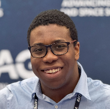
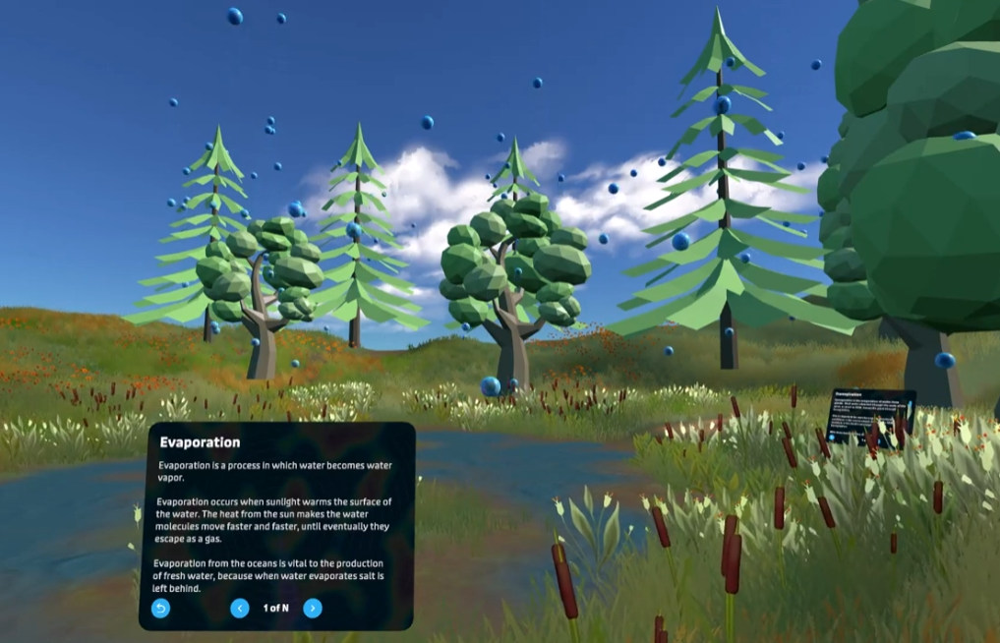
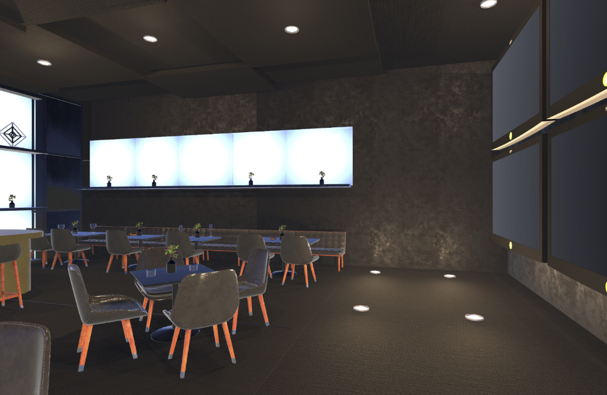

Hi there! I'm a software developer passionate about utilizing computer graphics and virtual reality to create immersive experiences.
We are dedicated to providing quality content and services to our users.
Here are some of the research projects and internships that I have worked on.

The objective for this internship was to build an interactive VR experience to educate the public about the water cycle. As a result, we have a VR application with detailed visuals for each process in the hydrological cycle. Furthermore, there are slide decks and quizzes to reinforce knowledge learned from this virtual experience. I also gained experience working with the Android SDK and publishing an application to the Meta Quest store.

Privacy within VR is a huge issue. Because of this, our study focused on collecting data within VRChat, and then recording the users perception of that data. This project utilized all possible avenues of data collection with the Meta Quest Pro and the Meta SDK. Opinions and perceptions of the user reacting to their data, were also recorded to get an overall consensus regarding data collection in VR.
Here are some of the achievements and awards that I have received from various hackathons.
Info
Here are some of the computer graphics projects and renderings that I have worked on.
Email us at contact@example.com or call us at (123) 456-7890.